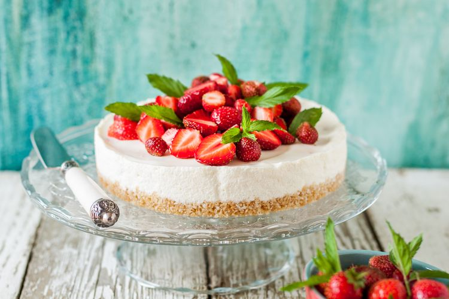

Cheesecake Tanpa Oven
Bahan
- Biskuit sesuai selera (Marie, Oreo, Graham Crackers dll) secukupnya tergantung ketebalan yang diinginkan
- 100 gram mentega cair
- 300 gram cream cheese
- 80 gram icing sugar
- 1 sendok teh gelatin
- 200 ml whipping cream
- Biji vanila secukupnya (opsional)
Cara Membuat
- Hancurkan biskuit pilihan hingga benar-benar halus. Bisa menggunakan ulekan, rolling pin, botol kaca, atau jika punya bisa menggunakan food processor.
- Campurkan dengan mentega cair, lalu aduk rata. Siapkan cetakan kue atau wadah cheesecake. Ratakan di bagian dasar wadah sebagai dasar kue, padatka. Kamu bisa menggunakan wadah ukuran apa saja sesuai selera, bisa yang besar atau di gelas-gelas cetakan kecil.
- Larutkan gelatin ke dalam 3 sendok makan air es. Sisihkan.
- Kocok whipping cream hingga kaku menggunakan mixer di wadah terpisah. Sisihkan.
- Kocok cream cheese dan icing sugar sampai lembut di wadah terpisah. Sisihkan.
- Larutkan gelatin yang sudah mengembang ke dalam sedikit air hangat sampai larut
- Campurkan sedikit demi sedikit ke dalam adonan cream heese tadi, lalu campurkan dengan whipping cream dan biji vanilla sampai rata.
- Tambahkan adonan cream cheese di atas dasar kue dari biskuit yang sudah dipadatkan tadi.
- Simpan ke dalam lemari es hingga padat.
- Hias cheesecake menggunakan aneka topping sesuai selera, bisa menggunakan cokelat cair, selai buah, potongan buah stroberi, bluberi, dan aneka kacang-kacangan.
- Cheesecake tanpa oven pun siap disajikan, enak jika dinikmati untuk cemilan sore hari.